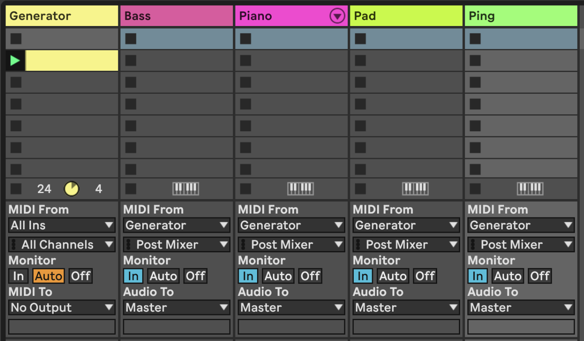

6 Recipe - Doing more with less using MIDI tools and plugins
Create a MIDI track but do not add an instrument to that track. This is going to be the “generator” for our track.
Within this track, add MIDI clips like those created in Recipe - Changing chords. Or you can use a Max for Live device like the (free Max for Live plugin) Nordmann Chord Generator to generate chords. Name this the “Generator” track (CTRL+R to rename).
-
Add MIDI tracks and assign the input for these tracks to be the “Generator” track that you have just created above.
 -
In your tracks, you can add MIDI plugins to alter the incoming chord. For example:

Here I am using a Velocity plugin to change and add a little randomness to the velocity output. Some virtual instruments can use velocity to alter the timbre of the produced sound, for example changing the filter cutoff frequency.
I have also used an arpeggiator to add some movement in the incoming MIDI chords. This breaks up the chords and allows me to do interesting things with individual notes.
It’s reasonable to view MIDI Note Echo as fairly pointless when you can take the output from the virtual instrument and apply audio echo. But MIDI Note Echo allows you to pitch up (or down) the echo and feedback (continuing to pitch up or down the repeated note). This in itself is pretty cool. Here I’m using the MIDI Random pitch plugin to occasionally add some extra randomness to the resulting note, then applying another MIDI Note Echo to that. This then gives you an ever changing set of notes out of the chain.
What we will get out of this chain has potential to get quite messy. That’s why we’ve applied a MIDI Scale plugin to “quantize” the notes back to a scale. This isn’t cheating - quantizers are routinely used in modular synths to bring control voltages onto scales. Here I’m using a pentatonic scale since any note in the scale will work pretty well with any other. The choice of scale dictates the overall sound coming out, but since there is a fair bit of randomness going on, pick your scale wisely to avoid the potential for harsh clashes. Unless that’s your thing. -
In one of the tracks place a Max for Live plugin called Tintinnabulator. This devices takes incoming MIDI and adds additional notes around the incoming notes using Arvo Pärt’s tintinnabulation technique. See [Tools - Chords and added notes].

-
Another MIDI plugin I’ve used in the set is the MIDI Note Length plugin. This is a very useful tool for this recipe, as it allows you to lengthen or shorten incoming MIDI notes. So if your input is short, staccato notes you can make them longer, or if the notes are long, you can make them shorter. In the context of this recipe we can take longer chord tones and split them into shorter notes to feed into a pad sound with a long decay or release, allowing that sound to ring out longer.

You could also apply an LFO to the note length and gate to randomly or systematically change the note lengths.
-
We have mostly been looking at MIDI NOTE plugins here. But there’s a much overlooked MIDI plugin called “Expression control” which allows you to map various MIDI incoming signals to ANY parameter in Live, including controls of other plugins. In the example below we’ve mapped various parameters to controls in the Operator instrument just for illustration.

Sure, Operator itself has the ability to vary cutoff frequency using MIDI Velocity information, but notice how each of the MIDI parameters on the left hand side has a drop-down menu option. Let’s look at what we can do…

There’s a wide variety of incoming MIDI inputs which can then be used to map to plugin controls, as well as a “random” input which will select a new value for every MIDI input note, and “incremental” which will increment values for every MIDI input note.
Also note that the plugin allows you to specify Min and Max levels for each of these - for example the Random input is mapped to Tone in Operator, but the range is limited between 55% and 75% of the values. This kind of constraint can add nice variations in timbre for each note without it sounding too jarring. The basic concept in this recipe - and one that I use frequently - is to take one MIDI part and make the most of it. Using MIDI plugins like this can ensure that the resulting sounds are related to the input, without having to be exactly the same. Anything you can do to delay, alter, spread out, harmonise and alter the incoming MIDI will add interest to the part. Using these MIDI parts with different instrument parts / sounds and audio effects will add variety and interest.
I have used this technique alongside existing audio stems in remixes. By using Ableton’s “Harmony to MIDI” I can get close to the original MIDI inputs by “tidying” the resulting part (getting rid of short notes by lengthening notes by hand, getting rid of notes outside the scale being used, transposing notes into a two or three octaves range rather than four or five, etc.), then augment that stem with virtual instruments driven by that “transcribed” MIDI part, but transformed through these MIDI plugins.Press play. Sit back and relax.
You can hear one instance of this track here: